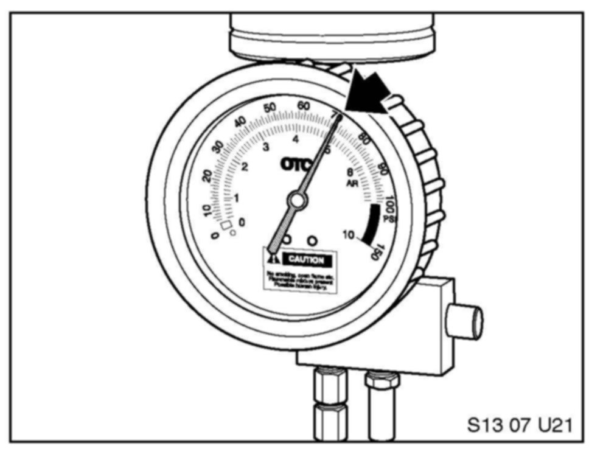

Procedure - E
SI B13 01 07 - Procedure - EZ4 (E89) equipped with the N52K engine
1. Run the vehicle for 10-15 minutes. Remove the EKP Module Fuse (refer to ETM Schematic). Start the vehicle to depressurize the low pressure fuel system; the engine will run for a short period and stall.
2. Lift the vehicle to access the under body cover protecting the low pressure connection (1) near the left frame rail.
3. Covering the line with a shop towel separate the line and Quick Disconnect Female Cap (1) and Quick Disconnect Male Adaptor (2).
4. Connect the application cylinder quick connect (1) to the Quick Disconnect Male Adaptor (2).
5. Pour 400 ml of fuel (1) and 150 ml of cleaner concentrate (2) into the beaker supplied in the kit.
6. Unscrew the top portion of the applicator and pour the mixture inside the tool. Reinstall the lid hand-tight and hang the cylinder from the hood striker.

7. Adjust the pressure regulator to 70 PSI and open the shutoff valve at the bottom.
8. Lower the vehicle on the lift to a safe height (A) whereby the applicator or hose (2) is not damaged. Install the Exhaust Removal System (1). The illustration shown is not the actual vehicle.
9. Start the vehicle; the vehicle should idle smoothly. The cleaning procedure should last approximately 12-14 minutes. If the vehicle begins to run roughly or misfire then turn the vehicle off. The applicator is nearing empty or is empty: remove the applicator quick connect from the fuel rail.
10. IMPORTANT! Remove the shop air supply hose from the applicator before removing the lid or releasing pressure from the applicator.
11. Release the pressure from the applicator cylinder with the pressure release button (2). Close the shutoff valve (1).
12. Pour 400 ml of fuel (1) and 150 ml of cleaner concentrate (2) into the beaker supplied in the kit again to start the second application.
13. Unscrew the top portion of the applicator and pour the mixture inside the tool. Reinstall the lid hand-tight.
14. Connect the shop air supply (2) to the application cylinder (1).

15. Adjust the pressure regulator to 70 PSI if needed and open the shutoff valve at the bottom.
16. Start the vehicle; the vehicle should idle smoothly. The cleaning procedure should last approximately 12-14 minutes. If the vehicle begins to run roughly or misfire then turn the vehicle off. The applicator is nearing empty or is empty: remove the applicator quick connect from the fuel rail.
17. IMPORTANT! Remove the shop air supply hose from the applicator before removing the lid or releasing pressure from the applicator.
18. Release the pressure from the applicator cylinder with the pressure release button (2). Close the shutoff valve (1).
19. Remove the application tools and reassemble the vehicle.
20. Refer to the final procedure before releasing the vehicle.